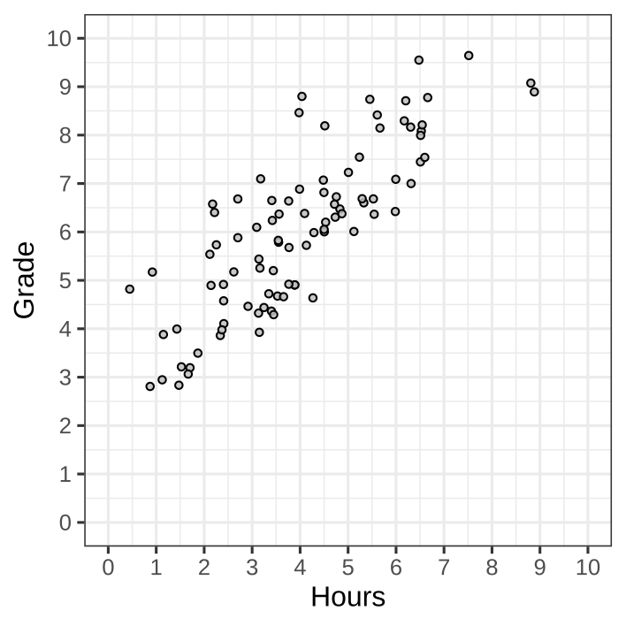
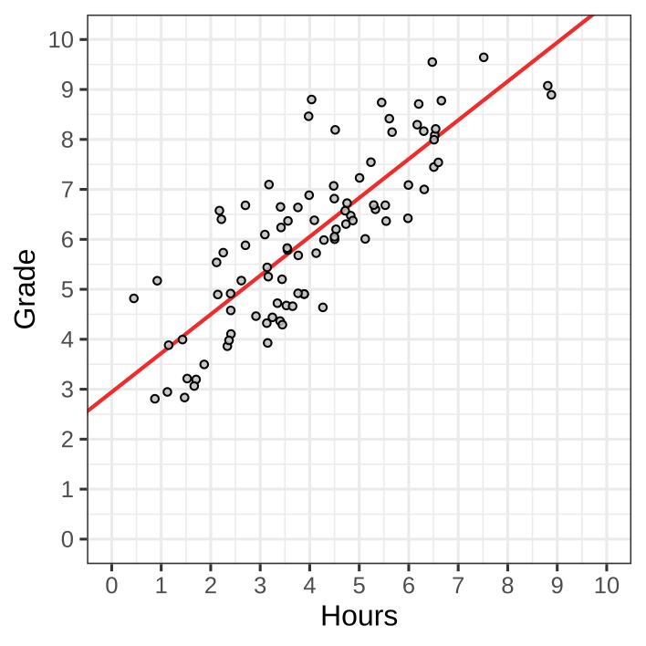
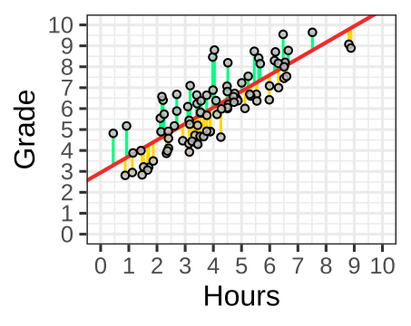
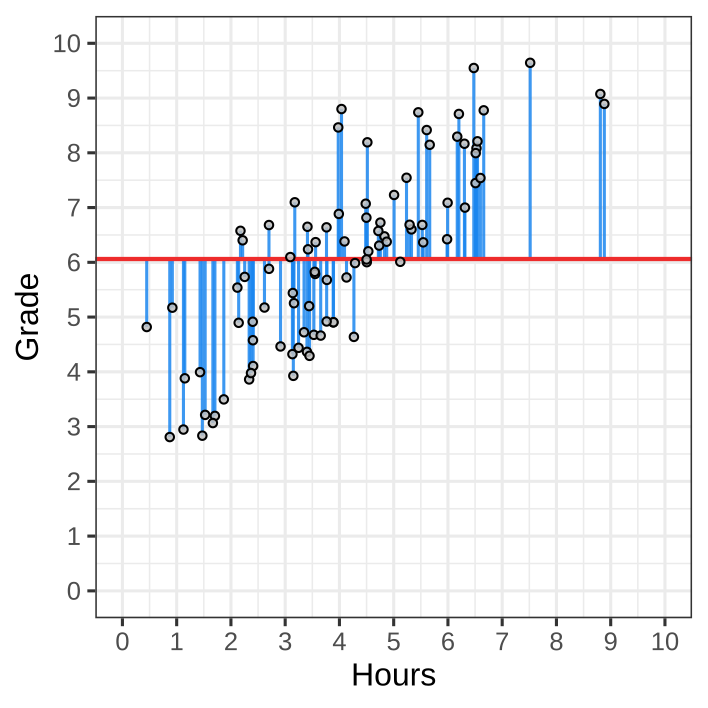

Lecture 9 - LAS
26-10-2026
\[ \newcommand{\hypo}{\mathcal{H}} \newcommand{\SE}{\mathrm{SE}} \newcommand{\dnorm}[2]{\mathcal{N}\left(#1, #2\right)} \newcommand{\res}{e} \newcommand{\rep}{\epsilon} \]
A family of models to analyze the relationship between one outcome and one or more predictors
\[ \widehat{\mathrm{Grade}} = \mathrm{Intercept} + \mathrm{Slope}\times\text{Hours studied} \]
Or in general,
\[ \underbrace{y}_{\substack{\text{outcome variable}\\\text{dependent variable}}} = \underbrace{a}_{\text{intercept}} + \underbrace{b}_{\text{slope}} \times \underbrace{x}_{\substack{\text{predictor variable}\\\text{independent variable}}} \]
\(\hat{y}_i = a + b \times x_i\)
| Symbol | Interpretation |
|---|---|
| \(y_i\) | Individual \(i\)’s score on dependent variable \(y\) |
| \(\hat{y}_i\) | Prediction for individual \(i\)’s score on dependent variable \(y\) |
| \(a\) | Coefficient, intercept of the regression line |
| \(b\) | Coefficient, slope of the regression line |
| \(x_i\) | Individual \(i\)’s score on independent variable \(x\) |
| \(\res_i\) | Difference between prediction and observation for individual \(i\) |

We found \(a = 2.9\) and \(b = 0.8\).
So the general equation: \(\hat{y} = a + b \times x\)
Becomes:
\[ \widehat{\mathrm{Grade}} = 2.9 + 0.8 \times \text{Hours studied} \]
The first six observations:
| Grade | Hours |
|---|---|
| 8.08 | 6.53 |
| 4.72 | 3.35 |
| 8.78 | 6.66 |
| 8.21 | 6.54 |
| 6.47 | 4.83 |
| 5.17 | 0.92 |
The predictions are
\[ \widehat{\mathrm{Grade}} = 2.9 + 0.8 \times \text{Hours studied} \]
| Grade | Hours | \(\widehat{\mathrm{Grade}}\) |
|---|---|---|
| 8.08 | 6.53 | 8.12 |
| 4.72 | 3.35 | 5.58 |
| 8.78 | 6.66 | 8.23 |
| 8.21 | 6.54 | 8.14 |
| 6.47 | 4.83 | 6.76 |
| 5.17 | 0.92 | 3.64 |
The residuals are
\[ \res = \mathrm{Grade} - \widehat{\mathrm{Grade}} = \mathrm{Grade} - (2.9 + 0.8 \times \text{Hours studied})\]
| Grade | Hours | \(\widehat{\mathrm{Grade}}\) | \(\res\) |
|---|---|---|---|
| 8.08 | 6.53 | 8.12 | -0.04 |
| 4.72 | 3.35 | 5.58 | -0.86 |
| 8.78 | 6.66 | 8.23 | 0.55 |
| 8.21 | 6.54 | 8.14 | 0.07 |
| 6.47 | 4.83 | 6.76 | -0.29 |
| 5.17 | 0.92 | 3.64 | 1.54 |
The sum of squared residuals are
\[ \sum_{i}^N\res_i^2 = (-0.04)^2 + (-0.86)^2 + 0.55^2 + \dots = 84.53 \]
| Grade | Hours | \(\widehat{\mathrm{Grade}}\) | \(\res\) |
|---|---|---|---|
| 8.08 | 6.53 | 8.12 | -0.04 |
| 4.72 | 3.35 | 5.58 | -0.86 |
| 8.78 | 6.66 | 8.23 | 0.55 |
| 8.21 | 6.54 | 8.14 | 0.07 |
| 6.47 | 4.83 | 6.76 | -0.29 |
| 5.17 | 0.92 | 3.64 | 1.54 |
The sum of squared residuals are computed on all 92 observations, not only those in the table
Total squared error:
Why squares?
Why not minimize the errors directly?
Last week
This is not a coincidence!


The OLS by designed makes these equal
Square the errors, so the negatives don’t cancel against the positives.
This means:
The OLS gives us the “best” regression line for the outcome given the predictor.
We fix the scale by compare the sum of squared errors to a baseline.
The null model:
\[ \hat{y}_i = a + \res_i \]
Comparing to the null model tells us: “How much does this predictor add on top of the intercept?”
What’s the prediction error of the null model?
:::: ::: {.columns}
\[ \begin{align} \mathrm{TSS} &= \sum_{i=1}^N (y_i - \hat{y}_i)^2 \\ &= \sum_{i=1}^N (y_i - a)^2 \\ &= \sum_{i=1}^N (y_i - \bar{y})^2 \\ \end{align} \]

:::